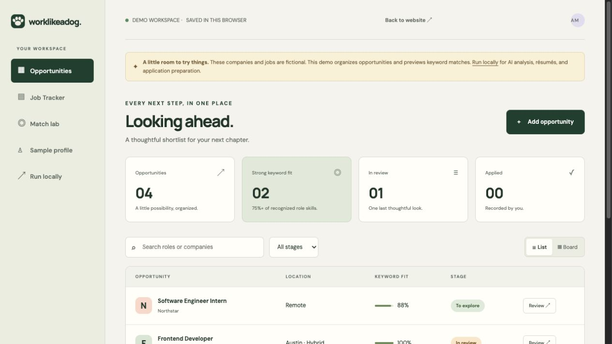

WorkLikeADog.
A local workspace for job research, application tracking, and AI-assisted résumé preparation.
Public demo uses fictional jobs and browser storage; the full AI workflow runs locally.
Inside the build
- THE GOAL
- Bring job research, application tracking, and résumé preparation into one workspace.
- THE APPROACH
- FastAPI and SQLAlchemy with indexed SQLite persistence, optional local Ollama analysis, Playwright preparation, and recoverable application workflows.
- THE DESIGN CHOICE
- Keep candidate data local and leave final application review and submission with the user.